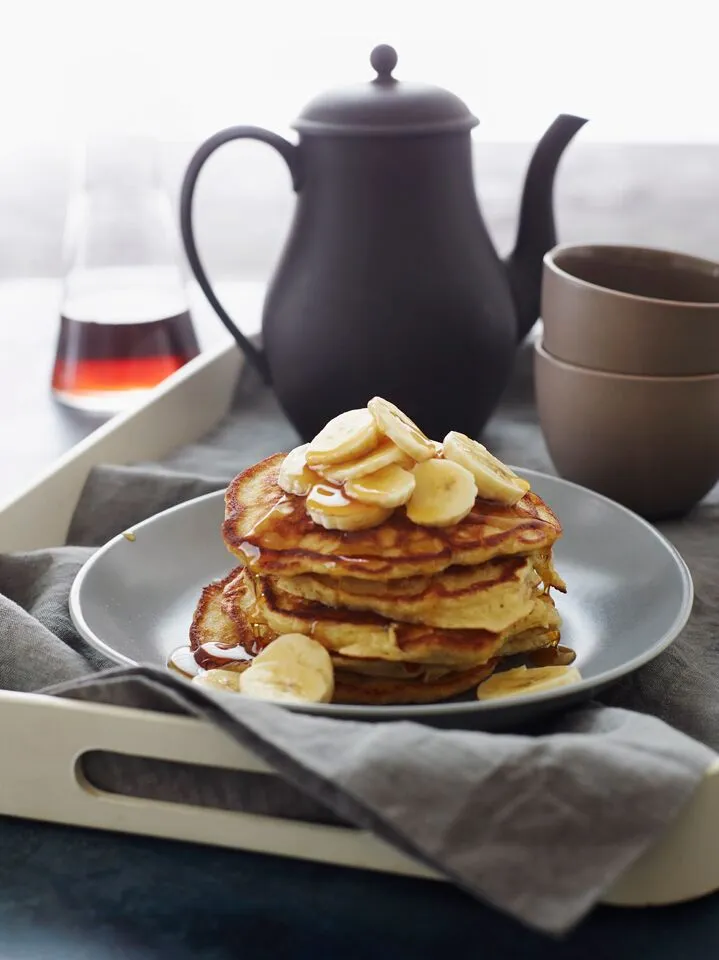

Pancakes

Description
Fluffy on the inside, crispy on the outside and delicately flavored with bananas, these are phenomenal banana pancakes.
ingredients
- 1½ cups all purpose flour, spooned into measuring cup and leveled off
- 2 tablespoons sugar
- 2½ teaspoons baking powder
- ½ teaspoon salt
- 1 small, over-ripe banana, peeled (the browner, the better)
- 2 large eggs
- 1 cup plus 2 tablespoons low fat milk
- ½ teaspoon vanilla extract
- 3 tablespoons unsalted butter, melted
Steps
- In a medium bowl, whisk together the flour, sugar, baking powder and salt.
- In a small bowl, mash the banana with a fork until almost smooth. Whisk in the eggs, then add the milk and vanilla and whisk until well blended. Pour the banana mixture and the melted butter into the flour mixture. Fold the batter gently with a rubber spatula until just blended; do not over-mix. The batter will be thick and lumpy.
- Set a griddle or non-stick pan over medium heat until hot. Put a pad of butter and one tablespoon vegetable oil onto the griddle, and swirl it around. Drop the batter by ¼-cupfuls onto the griddle, spacing the pancakes about 2 inches apart. Cook until a few holes form on top of each pancake and the underside is golden brown, about 2 minutes. Flip the pancakes and cook until the bottom is golden brown and the top is puffed, 1 to 2 minutes more. Using the spatula, transfer the pancakes to a serving plate.
- Wipe the griddle clean with paper towels, add more butter and oil, and repeat with the remaining batter. Serve the pancakes while still hot with maple syrup, sliced bananas and confectioners' sugar if desired.